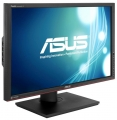

具备预调校色差值 ∆E <5 的专业级色彩保真度，提供居业界之冠的色彩准确度。采用画面比例为 16：10、屏幕分辨率达 1920 x 1200 的最佳 A+级 IPS 面板，提供 100% sRGB 全彩模式及准确的颜色。全球第一款具备4个 USB 3.0接口的显示器，让您体验10倍快的传输速度。
我现在正在使用的华硕PA248Q显示器显示效果非常好，显示器的功能按键考虑得非常周到。用绿蜘蛛校色仪调整色彩方便准确，为摄影、设计人员提供了一件精良的武器。
显示色彩非常准确，校色非常方便。16:10的比例适合设计人员使用，功能按键设计得非常合理。
遮光罩用塑料强度不高，用金属更合适。